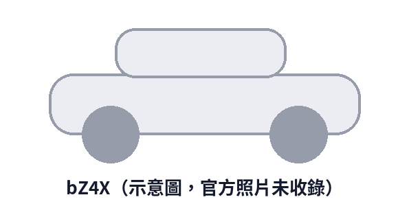

阿電推薦

bZ4XTOYOTA 純電休旅
圖片：Toyota 台灣官方
TOYOTA bZ4X
安靜、好開，一台就能顧好上班和全家出遊
建議售價 NT$1,280,000
續航里程（NEDC）743 km
電池容量74.7 kWh
最大馬力227 ps
能源效率6.7 km/kWh
充電規格CCS1 快充／J1772 慢充
主動安全TSS 3.0・8 具氣囊
定期保養
bZ4X 定期保養費用約比同級汽油 SUV 低約六成（依 U-CAR、8891 公開的養車成本），而且不需要更換機油。
Toyota 的 7 人座選擇
你需要坐 6 人以上，以下是 Toyota 台灣現有、有三排座椅的車款：
| 車款 | 動力 | 座位 | 建議售價 | 平均油耗 |
|---|
| SIENNA 旗艦 | 油電 | 正 7 人座 | 239 萬 | 18.7 km/L |
| SIENNA 鉑金 | 油電 | 正 7 人座 | 296 萬 | 17.7 km/L |
| ALPHARD 油電 | 油電 | 豪華 MPV** | 316 萬 | 16.4 km/L |
| LAND CRUISER 越野探索版 | 柴油＋48V 輕油電 | 三排座椅 | 288 萬 | 11.4 km/L |
| ALPHARD 插電式油電 | 插電式油電 | 豪華 MPV** | 330 萬 | 70.4 km/L* |
阿電：老實說，這些 7 人座車款的價位都比 bZ4X 高不少（239 萬起）。如果只是偶爾需要載 6、7 個人，也可以考慮平常開 5 人座、需要時再租車；最適合的方案可以請業務一起幫你評估。
和 Toyota 同級車比一比（5 年）
← 左右滑動，看其他車款 →
還不確定？先租一台 bZ4X 開一趟長途
展示中心試駕通常只能繞附近幾公里。可以向和泰集團的 iRent 或和運租車租一台 bZ4X，用你自己的生活開一天：
給業務的 5 行看車小抄
經你同意後，阿電會把這份摘要交給你選的展示中心，業務不用再從頭問一次。